Матеріали Дентсплай Сірона · журнал «ДентАрт» 2020 №1
Як обрати інструменти для ендодонтичного лікування
How to Choose Instruments for Endodontic Treatment
Упровадження машинної ендодонтії стало справжнім проривом у механічній обробці кореневих каналів і привело до значного прогресу в цій галузі. Еволюція ендодонтичного лікування пройшла етапи від використання цілого ряду ручних інструментів з неіржавіючої сталі до сучасних NiTi файлів для формування кореневого каналу.
Інструментальні методи обробки кореневих каналів описав ще 40 років тому доктор Герберт Шильдер. Ретельне формування кореневого каналу з урахуванням його анатомії (біологічна доцільність обробки), 3D дезінфекція та успішна обтурація залишаються головними принципами ендодонтичного лікування і на сьогодні.
Мета цієї статті — допомогти клініцистові визначитися з вибором інструментів для ендодонтичного лікування, спираючись на низку аспектів: ергономічність роботи, зниження ризиків ятрогенних помилок, використання в більшості складних клінічних ситуацій, достатні умови для якісного хімічного очищення та обтурації, щоб забезпечити тривалий успішний результат. Без розуміння механічних властивостей, дизайну інструментів, специфіки їх руху в кореневому каналі, протоколів використання такий вибір зробити неможливо.
У щоденній ендодонтичній практиці ми зустрічаємося з такими випадками:
- відсутність зорових контурів кореневого каналу на рентгенівському знімку або комп'ютерної томографії може означати наявність вузьких або облітерованих каналів;
- різкі викривлення і різні варіанти розташування додаткових кореневих каналів;
- широкі кореневі канали від коронарної до апікальної зон.
У 1988 р. Walia запропонував використовувати NiTi сплав для обробки кореневих каналів, оскільки він у 2-3 рази гнучкіший, ніж сталеві файли того самого розміру, і дозволяє обробити викривлені канали. Механічні властивості цього сплаву пов'язані з його здатністю перебувати у двох станах — мартенсит (механічне навантаження) і аустеніт (без навантаження). Закон Гука говорить, що деформація металу прямо пропорційна докладеній силі, і якщо ця сила перевищує певну межу, то настає необоротна деформація металу. Більшість металевих сплавів деформуються в межах від 0,1% до 0,2%, а NiTi сплав — до 8%, таким чином він має ширший діапазон зміни форми при докладанні механічної сили зі здатністю повернутися у початковий стан без її докладання. Саме цю властивість стали називати «пам'яттю форми».
Наступним кроком на шляху вдосконалення NiTi сплаву було створення M-Wire, який завдяки інноваційній термічній обробці набув гнучкості, в 4 рази більшої, ніж попередній сплав. Нова сучасна металургія пішла ще далі і створила сплав не просто гнучкий, стійкий до циклічних навантажень, але такий, який має фіксовану точку стадії мартенситу після певного рівня механічного навантаження без незворотної пластичної деформації. Тобто інструмент здатний залишатися в зігнутому стані після навантаження без пошкоджень. Це стало можливим після спеціальної термічної обробки сплаву, що надало йому золотистого кольору. Усі ці зміни металургії інструментів нерозривно пов'язані з дизайном ендодонтичних інструментів і продиктовані клінічними потребами.
Покоління ендодонтичних інструментів
Першими машинними файлами, якими я працювала, були Profiles і Gt files (Dentsply Tulsa Dental Specialisties). Перші нікельтитанові ротаційні інструменти були запропоновані доктором McSpadden у 1992 році і мали постійну 2% конусність, потім у 1994 році з'явилися Profiles доктора Jonson; інші роторні системи, такі як Light Speed (Senia and Wildey), Quantec (McSpadden), GT Rotary System (Buchanan), з'явилися дещо пізніше.
Інструменти першого покоління були створені зі звичайного NiTi сплаву, мали постійну фіксовану конусність на всьому протязі робочої частини 4%, 6%, 8%, 10%, 12%, тому для повної обробки одного кореневого каналу потрібно було використовувати 5-6 інструментів. Частий крок спіралі дозволяв цим інструментам бути гнучкими, а пасивна нарізка радіальних фасок добре центрувала їх у викривлених каналах. Безумовно, після ручних інструментів працювати було набагато швидше і легше, проте були і труднощі. Доводилося тиснути на інструмент, оскільки пасивна ріжуча фаска не зрізала дентин, а «зчісувала» його, глибина нарізування спіралі швидко заповнювалася дентинною стружкою, що призводило до надмірного торсійного навантаження і швидкого зношування і поломки інструмента. Крім того, мав місце ефект «шурупа», або вгвинчування, у кореневий канал, що не завжди вдавалося контролювати. У результаті — надмірне розширення апікального звуження. На препарування каналів, наприклад жувального зуба середньостатистичної складності, доводилося витрачати 40-50 хвилин (фото 1).
Наприкінці 1990-х на ринку з'явилися інструменти другого покоління. Основна відмітна їх властивість — наявність активних ріжучих фасок, що дозволяло швидше і активніше зрізати дентин у кореневому каналі. Деякі з цих інструментів мали постійну конусність і різну форму поперечного перерізу, що мінімізувало ефект вкручування. Деякі виробники застосували електрополірування для видалення всіх нерівностей з поверхні файла, що утворюються в результаті звичайного шліфувального процесу. Однак електрополірування затуплює ріжучі грані інструментів, що доведено науково і клінічно. Клініцистові знову доводиться застосовувати зайвий тиск на файл, що призводить до заклинювання, ефекту шурупа. Для нівелювання цих недоліків були запропоновані вищі швидкості руху файлів та альтернативні поперечні перерізи, як було сказано вище. До цієї лінійки належать Endosequence (Brasseler USA), Biorace (FKG Dentaire), M-TWO (Sweden & Martina), Flexmaster (Dentsply), Hero 642 (Micro-Mega). Більш досконалою системою з цієї лінійки стали інструменти зі змінною конусністю ProTaper (Dentsply) (фото 2).
Шейперні файли Sx, S1, S2 мають активні ріжучі частини у верхній і середній третині робочої частини і препарують саме ці частини кореневого каналу. Апікальна частина має діаметр 10 і 15 по ISO відповідно. Формуючі файли активно працюють в апікальній ділянці, закінчуючи повне препарування кореневого каналу до D 20 F1, 25 F2, 30 F3, 40 F4, 50 F5, в залежності від клінічної ситуації. Мінлива конусність дозволила скоротити кількість використовуваних інструментів для повної обробки кореневого каналу, а отже робочий час, кількість змащеного шару і дентинної стружки, що потрапляє за межі апікальної ділянки.
Я дуже довго працювала з цією лінійкою інструментів, було комфортно, але в складніших клінічних випадках, особливо у викривлених каналах, виникає дуже велике торсійне навантаження фінішних файлів, особливо у викривленій апікальній ділянці. Навантаження виникало через жорсткість файла, зумовлену товщиною стержня інструмента від 30 до 50 розміру по ISO. І щоб уникнути поломки, доводилося користуватися гібридною технікою обробки апікальної ділянки, використовуючи ручні інструменти (техніка доктора П'єра Машту).
У 2007 році з'явилося наступне покоління ендодонтичних файлів з термічно обробленого нікельтитанового сплаву, що значно поліпшило їх стійкість до циклової втоми і зробило безпечнішою роботу у викривлених каналах. Приклади брендів, що працюють за цією технологією: Twisted File (Sybron Endo), HyFlex (Coltene), GT, Vortex, Wave One (Dentsply). Хоча Wave One все-таки можна зарахувати до четвертого покоління файлів, які не здійснюють ротаційних рухів, а рухаються зворотно-поступально за годинниковою стрілкою і проти годинникової стрілки. Це реципрокні файли. Саме інновації в реципрокних технологіях привели до появи четвертого покоління файлів. Достатньо лише одного файла для повного препарування кореневого каналу. Ручна техніка збалансованих сил була застосована як основа для механічної обробки кореневого каналу.
У 2008 році Dentsply International прийняла концепцію «техніки одного файла». У 2011 році були випущені однофайлові системи Wave One і Reciproc, де три цикли руху за годинниковою і проти годинникової стрілки становлять 360°. Поліпшена геометрія поперечного перерізу і неоднакове значення кутів за годинниковою і проти годинникової стрілки значно поліпшили здатність цих файлів безпечно і швидко просуватися в кореневому каналі, а змінна конусність дозволяла обробити одним файлом більшість клінічних випадків (фото 3).
Дослідження доктора С. Бюрклейна і проф. Е. Шеффера підтвердили зниження часу препарування в розрахунку на 4 канали Wave One (82,3 с) у порівнянні з ротаційними файлами ProTaper (188,7 с). Значної різниці зміни кута випрямлення кореневого каналу теж не спостерігалося. Однак утворення дентинної стружки і товщина змащеного шару при роботі реципрокними файлами зменшилися. Все ж досить велика конусність у верхній та апікальній частинах інструмента Wave One створювала ризик транспортації апікального звуження і послаблення кореня у верхній його третині.
П'яте покоління ендодонтичних файлів ProTaper Next (PTN) більше пов'язане зі зміною геометрії поперечного перерізу інструмента, що здійснює ротаційні рухи. Склад і якість сплаву такі ж, як і у Wave One, M-wire, зі зниженням циклової втоми на 400% у порівнянні з файлами із традиційного NiTi сплаву. Форма поперечного перерізу — прямокутник зі зміщеним центром — має низку незаперечних переваг (фото 4):
- При ротації відбувається механічний рух, який поширюється уздовж активної частини інструмента. Дотик лише у двох точках з дентином кореня веде до плавних розхитуючих рухів, що мінімізує зчеплення зі стінками кореня і зменшує ймовірність заклинювання інструмента та ефект закручування.
- Дизайн файла зі зміщеним центром додає додаткового простору за поперечним перерізом для виведення стружки, що автоматично знижує торсійне навантаження, запобігаючи поломці файла. Поломка багатьох інструментів відбувається через заповнення проміжків між ріжучими гранями.
- Файл зі зміщеним центром виробляє хвилю, що нагадує синусоїду. У результаті тонший і гнучкіший файл PTN може здійснювати більший вплив, ніж інші файли з аналогічними вихідними даними (фото 5).
Мінлива запатентована конусність дозволяє мінімізувати кількість використовуваних файлів для повного препарування кореневого каналу і скоротити їх лише до 2-3-х файлів. Лінійка PTN має 5 файлів Х1, Х2, Х3, Х4, Х5 з відповідними діаметрами кінчика 19, 25, 30, 40, 50. Х1 і Х2 мають конусність, що підвищується і знижується. У Х1 вона підвищується від D1 до D11, потім від D12 до D16 конусність знижується для підвищення гнучкості інструмента і збереження радикулярного дентину. Х3, Х4, Х5 мають фіксовану конусність від D1 до D3. PTN використовують при однаковій швидкості 300 об. за хв і значенні торка 2-5, у залежності від товщини інструмента (фото 6).
Час, витрачений на обробку 4-х кореневих каналів з використанням Х1 і Х2, становить не більше 1,5 хв. Техніка роботи — зворотно-поступальні рухи, що вимітають без натиску до опору, після чого файл витягують і очищають. Не будемо детально описувати техніку роботи цими файлами, вона викладена в різних джерелах. Зазначимо тільки, що ця система ротаційних файлів об'єднує переваги попередніх поколінь і новітніх технологій, що робить цей інструмент справжнім лідером серед ротаційних файлів, які охоплюють досить широкий спектр складних клінічних випадків. Клінічно PTN ергономічний у роботі, простий у використанні, не вимагає стерилізації і вирішує більшість завдань, з якими доводилося б упоруватися великою кількістю файлів, комбінуючи різні системи.
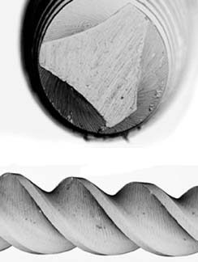
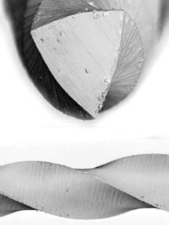
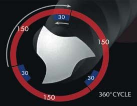
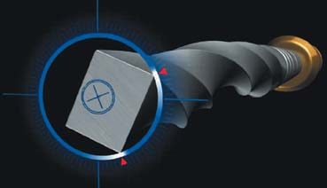
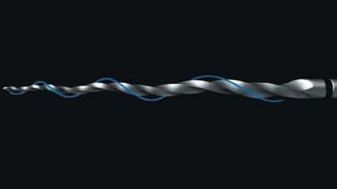
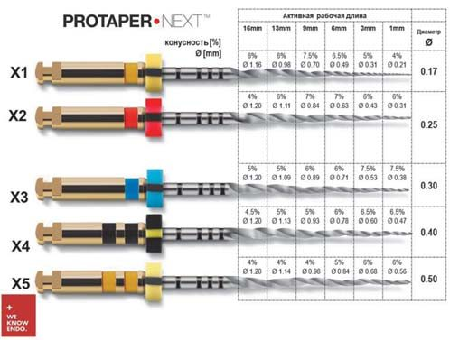
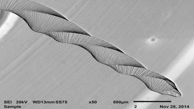
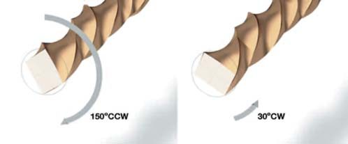
Ротаційні чи реципрокні?
Незважаючи на те, що багато років я працювала ротаційними файлами, мій вибір зупинився на новій реципрокній зворотно-поступальній однофайловій системі Wave One Gold. Ротаційні чи реципрокні, з постійною конусністю чи змінною, одноразові чи багаторазові? Такі питання виникають перед багатьма клініцистами. Витратна частина, звичка працювати в одному протоколі, страх перед невдачами, недостатнє розуміння того, що відбувається при препаруванні кореневого каналу, — це лише неповний перелік причин того, чому деякі клініцисти або працюють старими системами, або обирають нестандартизовані підробки, яких на нашому ринку з'явилося дуже багато. Спробуємо планомірно відповісти на ці питання.
Ротаційні інструменти при обертанні піддаються торсійному і циклічному навантаженню. Під час перевищення торсійного навантаження при даному значенні моменту обертання відбувається видима деформація металу (скручування, розкручування), яка може призвести до його поломки. Це може статися при надмірному тиску на інструмент, коли, наприклад, клініцист намагається пройти кальцинований канал, подолати блок в апікальній ділянці або розпломбувати канал. Якщо використовується інструмент зі звичайного NiTi сплаву, то такі зміни можна побачити ще до поломки і утилізувати його, а якщо інструмент зі сплаву M-wire, то він поламається відразу.
Циклічна втома виникає під час стискання і розтягування металу при проходженні викривлень. Чим більша кривизна каналу, тим більшому навантаженню піддається інструмент, причому в точці максимального вигину (Gabel і співавт., 1999; Sattapan, Palamara, Messer, 2000). Циклічне навантаження не видно, тому поломка виникає відразу. Якщо поломки не відбувається, можуть виникнути інші ускладнення — випрямлення кореневого каналу, перфорація або транспортація апікального звуження. Безумовно, одноразові, як реципрокні, так і ротаційні файли схильні до циклової втоми меншою мірою, ніж багаторазові.
Змінне обертання за годинниковою стрілкою і проти, запропоноване ще Yared у 2008 році, отримало свій розвиток у створенні реципрокних файлів спочатку з NiTi сплаву M-wire, а потім з інноваційного термічно обробленого сплаву з підвищеною гнучкістю. Реципрокні рухи знижують торсійне і циклічне навантаження значною мірою у порівнянні з ротаційними файлами (You і співавт., 2010).
Wave One Gold
Wave One Gold (WOG) працюють у реверсному режимі «збалансованих сил» і приводяться в дію попередньо запрограмованим двигуном (X-Smart Plus, Dentsply Sirona) або новим ендомотором X-Smart IQ, Dentsply Sirona. При русі за годинниковою стрілкою на 150° інструмент просувається апікально, зрізуючи дентин зі стінок кореневого каналу, за цим рухом іде обертання на 30° проти годинникової стрілки ще до того, як надмірне навантаження викличе деформацію металу і файл заблокується в каналі. Один цикл — 150 − 30 = 120°, три цикли — повний оборот на 360° (Weber, 2011) (фото 9).
Заклинювання інструмента відбувається набагато рідше, ніж у ротаційних файлів, зменшення кількості циклів при проходженні кореневого каналу одним файлом і супергнучкий еластичний сплав знижують циклічну втому. Просування файла в апікальному напрямку відбувається швидко і безпечно без використання потенційно небезпечного тиску, а також полегшується виведення ошурків.
Завдяки супереластичним властивостям сплаву інструмент згинається і залишається в такому положенні при виведенні з викривленого кореневого каналу, оскільки має меншу пам'ять форми у порівнянні зі звичайним нікельтитановим інструментом або інструментом зі сплаву M-wire. Файл можна вирівняти або залишити в такому положенні при повторному введенні в кореневий канал, і він буде точно слідувати природній формі цього каналу (Webber, 2015). Іншою перевагою властивості цього сплаву може бути попереднє згинання файлу при важкому доступі до кореневого каналу.
Поперечний переріз цього файла — це ексцентричний паралелограм, що контактує зі стінками кореня однією або двома точками. Такий переріз дозволяє зменшити блокування інструмента в кореневому каналі, збільшити простір для виведення ошурків, значно знизити ефект вкручування. Напівактивний кінчик округло-овальної форми дозволяє інструменту безпечно рухатися по попередньо підготованому гладенькому шляху (фото 7, 8).
Однофайлова зворотно-поступальна система Wave One Gold доступна в трьох розмірах по довжині: 21 мм, 25 мм, 31 мм.
- WOG small — розмір 20 по ISO, з постійною конусністю D1-D3 7%.
- WOG primary — розмір по ISO 25, з постійною конусністю D1-D3 7%.
- WOG medium — розмір по ISO 35, з постійною конусністю D1-D3 6%.
- WOG large — розмір по ISO 45, з постійною конусністю D1-D3 5%.
Починаючи з D4-D16, кожен файл має конусність, яка прогресивно зменшується, для забезпечення більшої гнучкості і більш консервативного препарування. WOG мають укорочений хвостовик — 11 мм — для полегшення прямолінійного доступу до кореневих каналів жувальних зубів. У більшості клінічних випадків достатньо одного файла для повного формування кореневого каналу, адекватної іригації та обтурації (фото 19).
Протокол використання WOG (фото 10, 11)
1. Створення прямолінійного доступу з використанням ендодонтичних борів та ультразвукових інструментів, хоча в складних випадках, при неможливості його створення, файл можна зігнути попередньо для зручного входу в устя кореневого каналу.
2. Вибір потрібного розміру файлу.
- WOG primary — якщо ручний К-файл 08 або 10 вільно проходить на робочу довжину.
- WOG medium — якщо файли 20, 25 досягають робочої довжини, у цьому випадку навіть не потрібно створювати гладенький шлях. Але цей файл все одно слід використовувати лише після застосування primary.
- WOG large — при досягненні робочої довжини К-файлом 30-35, без створення гладенького шляху і теж після застосування primary.
- WOG small — використовується при неможливості проходження кореневого каналу на робочу довжину WOG primary. Підготовка гладенького шляху обов'язкова. У випадках з дуже довгими і викривленими каналами обробку можна вважати остаточною з використанням WOG small.
Створення гладенького шляху робиться після навігації кореневого каналу К-файлом 10 ротаційним інструментом ProGlider з діаметром кінчика 16 мм і змінною конусністю. Застосування файлів WOG без створення гладенького шляху у вузьких і викривлених каналах може призвести до його деформації (фото 13).
Після точного вимірювання робочої довжини слід встановити гумовий стопер на обраному інструменті, ґрунтуючись на референтної точці на зубі, заповнити кореневий канал іригаційним розчином, встановити кінчик файла в усті каналу і увімкнути ендомотор. Працювати вимітаючими рухами рекомендується тільки в каналах з іррегулярною формою, в інших випадках використовується поступальний рух без тиску, доки стопер не досяг референтної точки. Потім інструмент виводиться з кореневого каналу і оцінюється заповнення його дентинною стружкою (фото 12). При повній обробці кореневого каналу стружка заповнить тільки його апікальну частину, якщо вона покриває лише верхню і середню третини інструмента, то цикл потрібно повторити. Після кожного циклу робляться іригація та рекапітуляція кореневого каналу К-файлом 10. Потім проводиться калібрування кореневого каналу К-файлом 25.02. Якщо файл щільно фіксується в кореневому каналі на робочу довжину, то його обробка завершена. Якщо файл вільно прослизає через апікальний отвір, слід продовжити препарування WOG файлом більшого розміру в такій самій техніці.
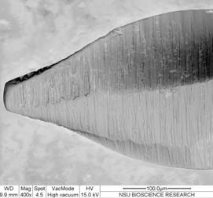
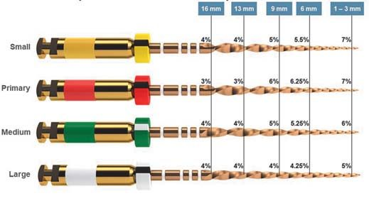
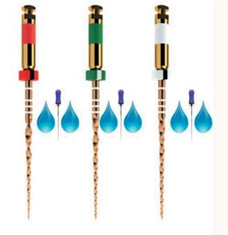
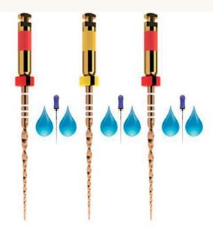
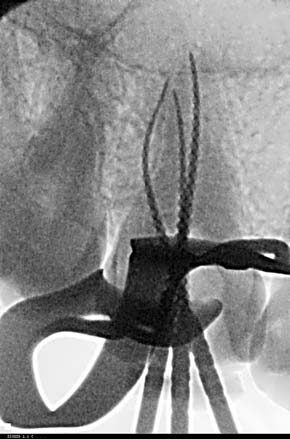
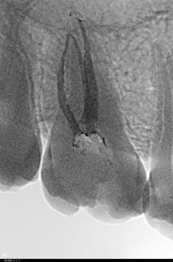
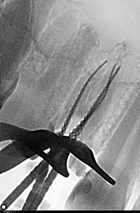
Клінічні приклади
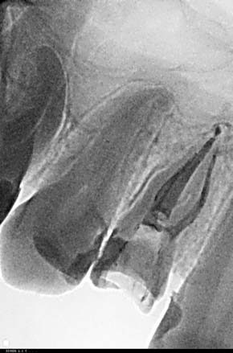
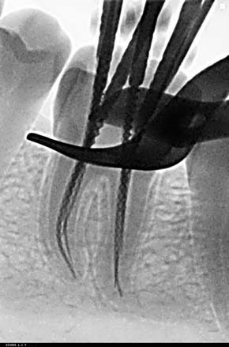
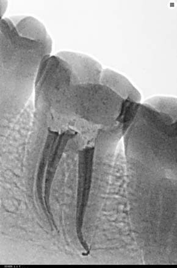
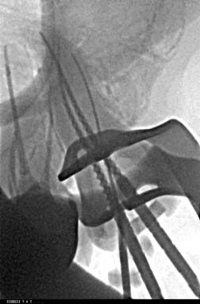
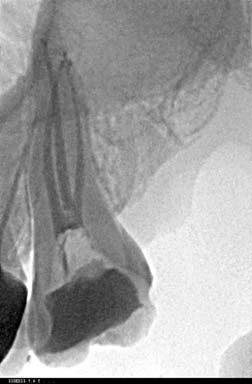
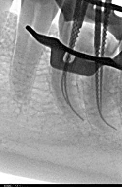
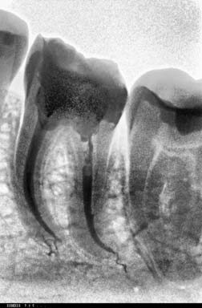
Висновки
Інноваційний дизайн і металургія файлів Wave One Gold демонструють чудову ріжучу ефективність, гнучкість, зниження ризиків ятрогенних ускладнень при одноразовому використанні, більшу впевненість у складних клінічних випадках, безпеку, простоту застосування і чудові результати.
Підготовка кореневих каналів у 80% випадків одним файлом позбавляє від необхідності витрачати дорогоцінний час і усуває непотрібні витрати на стерилізацію. Швидший час підготовки кореневих каналів дозволяє лікареві зосередитися на дуже важливому аспекті клінічної ендодонтії — дезінфекції. Саме цей інструмент зміг збалансувати чудеса технологій до потреб клініцистів.
Не варто зациклюватися на минулому, треба завжди йти в ногу з часом і бути на гребені хвилі.
Література
- Ruddle CJ: Shaping complex canals: clinical strategy and technique, Dent Today 33:11, 2014, p. 88-95.
- Ruddle CJ: Focus on: endodontics, Dent Today 34:2, 2015, p. 18.
- Webber J, Machtou P, Pertot W, Kuttler S, Ruddle CJ, West JD: The WaveOne single-file reciprocating system, Roots 1:28-33, 2011.
- Ruddle CJ: A retrospective report on WaveOne: observations of 1,200 prepared canals, Endodontic Practice US 5:4, 2012, p. 56.
- Berutti E, Negro AR, Lendini M, Pasqualini D: Influence of manual preflaring and torque on the failure rate of ProTaper rotary instruments, J Endod 30:4, 2004, p. 228-230.
- Ruddle CJ: Endodontic canal preparation: WaveOne single-file technique, Dent Today 31:1, 2012, p. 124, 126-129.
- Yared G: Canal preparation using only one NiTi rotary instrument: preliminary observations, Int Endod J 41:4, 2008, p. 339-344.
- Letters S, Smith AJ, McHugh S, Bagg J: A study of visual and blood contamination on reprocessed endodontic files from general dental practice, Br Dent J 199:8, 2005, p. 522-525.
- Dentsply Maillefer engineering and testing, Ballaigues, Switzerland, 2014.
- Bürklein S, Hinschitza K, Dammaschke T, Schäfer E. Shaping ability and cleaning effectiveness of two single-file systems in severely curved root canals of extracted teeth: Reciproc and WaveOne versus Mtwo and ProTaper. Int Endod J. 2012;45(5):449-461.
- Bürklein S, Schäfer E. Apically extruded debris with reciprocating single-file and full-sequence rotary instrumentation systems. J Endod. 2012;38(6):850-852.
- De-Deus G, Brandão MC, Barino B, et al. Assessment of apically extruded debris produced by the single-file ProTaper F2 technique under reciprocating movement. Oral Surg Oral Med Oral Pathol Oral Radiol Endod. 2010;110(3):390-394.
- Gabel WP, Hoen M, Steiman HR, Pink FE, Dietz R. Effect of rotational speed on nickel-titanium file distortion. J Endod. 1999;25(11):752-754.
- Gambarini G, Grande NM, Plotino G, et al. Fatigue resistance of engine-driven rotary nickel-titanium instruments produced by new manufacturing methods. J Endod. 2008;34(8):1003-1005.
- Pruett JP, Clement DJ, Carnes DL. Cyclic fatigue testing of nickel-titanium endodontic instruments. J Endod. 1997;23(2):77-85.
- Webber J. Shaping canals with confidence: WaveOne GOLD single-file reciprocating system. International Dentistry. 2015;6(3):6-17.
- Webber J, Machtou P, Pertot W, et al. The WaveOne single-file reciprocating system. Roots. 2011;1:28-33.
- You SY, Bae KS, Baek SH, et al. Lifespan of one nickel-titanium rotary file with reciprocating motion in curved root canals. J Endod. 2010;36(12):1991-1994.